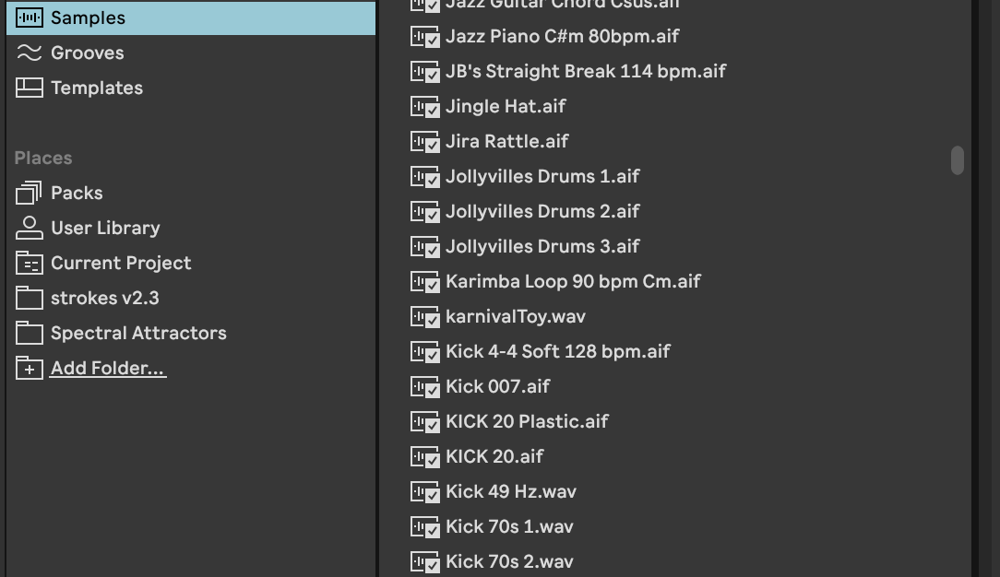

Welcome to Web Audio!
Intros
Share a favorite / memorable audio experience from the past 1-2 weeks
Contact
mattbriannelson@gmail.com
@mattholamieux:grayarea.org
https://github.com/mattholamieux
What you will need
- Tone.js Library
- P5.js Library
- Tone.js Docs
- P5.js Docs
- Collection of p5 sketches for Web Audio
- Slide Deck
- A Code Editor
- Headphones
Pre-Configured Web IDE
with p5.js and Tone.js
Web Audio: Day One
Synthesis & Sequencing
Learning Objectives
- Describe the basic building blocks of a synthesizer
- Synthesize and manipulate sounds with code
- Sequence musical events in the browser
- Visualize musical events with P5.js
Agenda
- Intros
- Setting up your environment
- Fundamentals of digital audio synthesis with Tone.js
- Sequencing note events with Tone.js
- Connecting our sequence to p5.js
- Mini-project #1: polyrhythmic loop
Hello Tone
// Create a new Tone.Synth object and conect the synth to computer's audio output
const synth = new Tone.Synth().toDestination();
// Trigger note C4
synth.triggerAttack("C4");
Let's use P5 to add buttons.
- We'll use one button to call Tone.start() and trigger the note onset
- We'll use a second button to trigger the note release
We create two global variables on lines 1-2 for our buttons
We create the buttons on lines 8-9 using P5's createButton() function
On lines 10-11, we add the .mousePressed() method to each button, and pass each one a different function
The functions are defined on lines 17-27


Oscillator Types

Try changing the oscillator type on line 6
Oscillator Types
What do you notice about the different sonic qualities (or timbre) of the oscillators?
Filters

Creating a Tone.Filter
// Create a filter and set cutoff frequency and filter type
const filter = new Tone.Filter(500, "lowpass ")
// Connect our synth to the filter
synth.chain(filter);
// Connect the filter to the output
filter.toDestination();
Try changing the filter frequency on line 7 from 500 to 2500 to 5000 to 15000 (frequency is the first argument to Tone.Filter)
Then try changing the filter type on line 7 to "highpass "
Bonus: add a line of code to the draw loop to control the frequency value with the mouseX position
Amplitude Envelope

Controlling amplitude in Tone.js
// Set attack, decay, and release values for synth
synth.envelope.attack.value = 0.01;
synth.envelope.decay.value = 0.2;
synth.envelope.release.value = 1;
// Trigger the note attack followed by the note release after 0.1 seconds
synth.triggerAttackRelease("C4 ", 0.1);
Try changing the attack, decay, and release times on lines 10-12
Then try changing the sustain time on line 33 (second argument to triggerAttackRelease)
Bonus: add a conditional statement to the draw loop to control release time with right and left arrows
Defining multiple synth params
const synth = new Tone.Synth({
oscillator: {
type: "sawtooth "
},
envelope: {
attack: 1,
decay: 0.5,
release: 4
}
});
Tone.js includes different synthesis models
Each has different parameters
MonoSynth
const monoSynth = new Tone.MonoSynth({
oscillator: {
type: "square",
},
envelope: {
attack: 0.005,
decay: 0.1,
sustain: 0.9,
release: 1,
},
filter: {
Q: 6,
type: lowpass,
rolloff: -24,
},
filterEnvelope: {
attack: 0.06,
decay: 0.2,
sustain: 0.5,
release: 2,
baseFrequency: 200,
octaves: 7,
exponent: 2,
},
});
FM Synth
const fmSynth = new Tone.FMSynth({
envelope: {
attack: 0.1,
decay: 0.5,
release: 4,
},
modulationEnvelope: {
attack: 0.3,
decay: 0.5,
release: 1,
}
harmonicity: 8,
modulationIndex: 10,
});
DuoSynth
const duoSynth = new Tone.DuoSynth({
voice0: {
oscillator: {
type: "sine",
},
filter: {
Q: 6,
type: "lowpass",
rolloff: -24,
},
envelope: {
attack: 0.005,
decay: 0.1,
sustain: 0.7,
release: 1,
},
filterEnvelope: {
attack: 0.06,
decay: 0.2,
sustain: 0.5,
release: 2,
baseFrequency: 1000,
octaves: 3,
exponent: 2,
},
},
voice1: {
oscillator: {
type: "sine",
},
filter: {
Q: 6,
type: "lowpass",
rolloff: -24,
},
envelope: {
attack: 0.005,
decay: 0.1,
sustain: 0.7,
release: 1,
},
filterEnvelope: {
attack: 0.06,
decay: 0.2,
sustain: 0.5,
release: 2,
baseFrequency: 1000,
octaves: 3,
exponent: 2,
},
},
vibratoAmount: 0.5,
vibratoRate: 5,
harmonicity: 1.5,
});
Pluck Synth
const pluckSynth = new Tone.PluckSynth({
attackNoise : 1 ,
dampening : 4000 ,
resonance : 0.7
});
The synths.js file creates four different Tone.Synth objects
Re-assign the mySynth variable on line 3 to different synth objects defined in synths.js
Time in Tone.js
https://github.com/Tonejs/Tone.js/wiki/TimeChange the sustain length (second argument to triggerAttackRelease on line 21 of sketch.js) to time signature relative values (e.g. "4n", "16n", etc)
Tone.Loop
const myLoop = new Tone.Loop((time) => {
monoSynth.triggerAttackRelease("C4", "16n", time);
}, "4n").start(0);
Tone.Transport.start();
BPM
We can change the tempo with Tone.Transport.bpm
Tone.Transport.bpm.value = 80;
Notice that everything in our callback function on lines 8-10 repeats at the rate defined on line 11
Try changing the bpm value on line 5
Learn more about callback functions
Playing a Melody
Given the following array of note values, how can we program our loop to play a different note each time?
const notes = ["C3", "D3", "G3", "A3", "C4", "E4"];
Option One
const notes = ["C3", "D3", "G3", "A3", "C4", "E4"];
let index = 0;
const myLoop = new Tone.Loop((time) => {
let note = notes[index];
monoSynth.triggerAttackRelease(note, "16n", time);
index++;
if (index > notes.length - 1) {
index = 0;
}
}, "4n").start(0);
Option Two
const notes = ["C3", "D3", "G3", "A3", "C4", "E4"];
let index = 0;
const myLoop = new Tone.Loop((time) => {
let note = notes[index%notes.length];
monoSynth.triggerAttackRelease(note, "16n", time);
index++;
}, "4n").start(0);
Because we used notes.length in our conditional statement on line 13, we can add or remove values from the notes array without any issues
Rests
How might we add rests (pauses) to our sequence?
const notes = ["C3", "D3", "rest", "G3", "A3", "rest", "C4", "E4"];
let index = 0;
const myLoop = new Tone.Loop((time) => {
let note = notes[index];
if (note !== "rest"){
monoSynth.triggerAttackRelease(note, "16n", time);
}
index++;
if (index > notes.length - 1) {
index = 0;
}
}, "4n").start(0);
Tone.Pattern
const pattern = new Tone.Pattern((time, note) => {
monoSynth.triggerAttackRelease(note, "16n", time);
},["C2", "D4", "E5", "A6"],"upDown").start(0);
pattern.interval = "16n";
Try changing the pattern type
Options include "up", "down", "upDown", "random"
For a full list of pattern names, see https://tonejs.github.io/docs/14.7.39/type/PatternName
Tone.Sequence
const seq = new Tone.Sequence((time, note) => {
monoSynth.triggerAttackRelease(note, "16n", time);
}, ["C4", ["E4", "D4"], "G4", ["A4", "G4"]], "4n").start(0);
Subarrays indicate subdivisions of the interval
Try changing the order and number of notes in subarrays on line 9
What happens with multiple layers of nesting arrays?
Playing multiple sequences simultaneously
We can't trigger the same synth twice at the same time
const seq1 = new Tone.Sequence((time, note) => {
monoSynth.triggerAttackRelease(note, "16n", time);
}, ["C4", ["E4", "D4", "E4"], "G4", ["A4", "G4"]], "2n").start(0);
const seq2 = new Tone.Sequence((time, note) => {
monoSynth.triggerAttackRelease(note, "16n", time);
}, ["G3", "G4", "E4", "D3", ["A4", "G4"]], "8n").start(0);
Error: Start time must be strictly greater than previous start time
One option is to create two sepearate synths and trigger each with a different sequence
In this example, two synths are defined in synths.js and each sequence triggers a different one
Another option is to pass our synth as an argument to Tone.PolySynth()
const polySynth = new Tone.PolySynth(Tone.Synth, {
oscillator: {
type: "sawtooth"
},
envelope: {
attack: 0.01,
decay: 0.3,
sustain: 0.7,
release: 2
}
}).toDestination();
with Tone.PolySynth() our synth becomes "polyphonic", meaning it can play multiple notes at once
for more on polyphony, check out https://www.perfectcircuit.com/signal/synthesizer-polyphonyMini Project #1
Create a polyrhythmic sequence
Parameters
- Should include more than 1 Tone.Loop, Tone.Pattern, or Tone.Sequence
- The result should be polyrhythmic (i.e. combine multiple contrasting rhythms)
- Bonus: Add a visual component to your sequence
Visualize Amplitude
// Connect the synth to Tone.Waveform
const waveform = new Tone.Waveform();
synth.connect(waveform);
function draw(){
// get amplitude values as array
const values = waveform.getValue();
// draw a rect for each array value and map width to the value
for (let i = 0; i < values.length; i++) {
const amplitude = values[i];
let w = amplitude * 200;
rect(width/2, height/2, w);
}
}
visualizing amplitude
Visualize Pitch
let circleX = 200;
const seq = new Tone.Sequence((time, note) => {
synth.triggerAttackRelease(note, "16n", time, random(1));
let hertz = Tone.Frequency(note).toFrequency();
circleX = map(hertz, 0, 1000, 0, width);
}, ["C4", ["E4", "D4", "C3", "G5"], "G4", ["A4", "G4"]], "2n").start(0);
function draw() {
background(0);
fill(255);
ellipse(circleX, 100, 20);
}
Tone.Frequency() can be used to convert notes (e.g. "C4") to frequency values
For a note::frequency conversion chart, see https://pages.mtu.edu/~suits/notefreqs.html
visualizing pitch
In this final example, each circle's x position is determined by the current position of each loop as defined by the "step" variable
Each loop references the same notes array, but with different intervals and delay times (e.g. line 30)
Only the first loop plays through the entire notes array. Notice, for example, how line 23 uses notes.length-5 as the divisor
Web Audio: Day Two
Samples, Effects, & UI
Learning Objectives
- Compare/contrast sampling to synthesis
- Add effects to our sounds
- Build simple GUIs to control sequences and parameters
Agenda
- Day One review
- Fundamentals of sample playback with Tone.js
- Applying effects to our sound
- Building simple UIs with p5.touchgui
- Mini-project #2: step sequencer
what looks familiar from day one?
what looks unfamiliar? what do you have questions about?
What is a sampler?

a sampler allows music to be made out of any sound recorded by the user, rather than relying on tones generated by oscillators
Samples are any audio files used as the sound source in a sampler
Let's change our Tone.Synth to a Tone.Sampler
const sampler = new Tone.Sampler({
urls: {
A1: "A1.mp3",
A2: "A2.mp3",
},
baseUrl: "https://tonejs.github.io/audio/casio/"
}).toDestination();
Notice that we only define audio files for two notes, but our sequence includes other notes not defined in our sampler
Tone.Sampler automatically repitches the samples, making it is possible to play pitches which were not explicitly included
Try changing "casio" in the baseUrl path to "salamander"
These audio files are hosted at https://github.com/Tonejs/audio
Samples can also be loaded from local files
In this example, audio files are uploaded to a /samples sub-directory
Loading local files can take time; include an onload message to indicate when the files have finished loading
Samples can also be unpitched percussion
In this example, we don't want to repitch our samples so we provide the exact path to each file and only use those exact note values in our sequence
The note values no longer correspond to pitch, but rather as a "key" to each unique sample
Samples can be anything!
(any audio file that is)
Let's add some effects!

Tone.js has many built-in effect objects, including delay, reverb, chorus, & distortion
const sampler = new Tone.Sampler({
urls: {
A1: "A1.mp3",
A2: "A2.mp3",
},
baseUrl: "https://tonejs.github.io/audio/casio/"
})
const delay = new Tone.PingPongDelay({
delayTime: "16n",
feedback: 0.5,
wet: 0.5
})
sampler.chain(delay);
delay.toDestination();
Try changing the wet value from a float between 0 and 1
Wet and Dry refer to how much of the source signal is passed through the effect vs how much is passed through unaffected
Now try changing the delay time to other time signature relative values (e.g. "4n")
Finally change the feedback value to a float between 0 and 1. Be careful with higher values!
The reverb effect can provide a sense of sound in a physical space
Everyone loves distortion!
Try applying one of the other effects listed at https://tonejs.github.io/docs/14.7.77/index.html
We can chain multiple effects together
const sampler = new Tone.Sampler({
urls: {
A1: "A1.mp3",
A2: "A2.mp3",
},
baseUrl: "https://tonejs.github.io/audio/casio/"
})
const delay = new Tone.PingPongDelay({
delayTime: "16n",
feedback: 0.5,
wet: 0.5
})
const reverb = new Tone.Reverb({
decay: 3,
preDelay: 0.1,
wet: 0.7
})
const distortion = new Tone.Distortion({
distortion: 5,
wet: 1
})
sampler.chain(distortion, delay, reverb);
reverb.toDestination();
Try reversing the order of the effects chain to see how it affects the sound
Remember that the final effect in the chain should be connected to the toDestination() method
Controlling params with UI
Let's use p5.js to control synth parameters in real time
Using p5's mouseX and mouseY variables
function draw(){
delay.wet.value = map(mouseX, 0, width, 0, 1, true);
delay.feedback.value = map(mouseY, height, 0, 0, 0.9, true);
}
We need to scale the mouseX and mouse Y values to the appropriate range using P5's map() method (lines 25-26)
In this example, mouseX and mouseY have a possible range of 0-400 (canvas width and height), while delay.wet and delay.feedback are 0-1
read more about p5 map: https://p5js.org/reference/#/p5/map
Using key presses
const myDistort = new Tone.Distortion({
distortion: 0,
wet: 1
});
let distortionVal = 0;
function draw(){
if (keyIsDown(UP_ARROW)) {
distortionVal += 0.05;
}
if (keyIsDown(DOWN_ARROW)) {
distortionVal -= 0.05;
}
myDistort.distortion = distortionVal;
}
The nested if-statement on line 29 ensures that the distortion value doesn't go below zero (which would throw an error)
Using sliders
let slider;
function setup(){
slider = createSlider(0, 1, 0, 0.01);
slider.position(100, 150);
slider.style('width', '150px');
}
function draw(){
reverb.wet.value = reverbSlider.value();
}
Parameters to createSlider on line 17 are (minimum value, maximum value, initial value, increment amount)
Mini Project #2
Create a programmable drum machine

Parameters
- Should include 6 rows of 12 checkboxes
- Each column represents a step in the sequence and each row represents a different "instrument"
- The sampler is triggered when a checkbox in the current step is checked
- Should include 3 sliders to allow user to change FX parameters
- A fourth slider should allow the user to change the tempo
Create a row of checkboxes
let startButton;
let stopButton;
const notes = ["A1", "B1", "C1", "D1", "E1", "F1"];
let index = 0;
let row = [];
const rowLength = 12;
function setup() {
createCanvas(400, 400);
startButton = createButton("start transport");
stopButton = createButton("stop transport");
startButton.mousePressed(startTransport);
stopButton.mousePressed(stopTransport);
// Create checkboxes and push to row array
for (let i = 0; i < rowLength; i++) {
let cb = createCheckbox();
cb.position(i * 20 + 25, j * 20 + 60);
row.push(cb);
}
}
Create a Tone.Loop to cycle through checkboxes and check if "checked"
let step = 0;
const loop = new Tone.Loop((time) => {
let step = index % rowLength;
let cb = row[step];
if (cb.checked()) {
sampler.triggerAttackRelease(notes[0], "8n", time);
}
index++;
}, "8n").start(0);
Visually highlight the current step
let step = 0;
const loop = new Tone.Loop((time) => {
let step = index % rowLength;
for (let box of row) {
box.style('background-color', 'gray');
}
let cb = row[step];
cb.style('background-color', 'blue');
if (cb.checked()) {
sampler.triggerAttackRelease(notes[0], "8n", time);
}
index++;
}, "8n").start(0);
Start the transport and click the checkboxes to trigger the sampler
Create six rows of checkboxes
let startButton;
let stopButton;
const notes = ["A1", "B1", "C1", "D1", "E1", "F1"];
let index = 0;
const rowLength = 12;
const numRows = 6;
const grid = [];
function setup() {
createCanvas(300, 400);
startButton = createButton("start transport");
stopButton = createButton("stop transport");
startButton.mousePressed(startTransport);
stopButton.mousePressed(stopTransport);
for (let j = 0; j < numRows; j++) {
let row = [];
for (let i = 0; i < rowLength; i++) {
let cb = createCheckbox();
cb.position(i * 20 + 25, j* 20 + 25);
row.push(cb);
}
grid.push(row);
}
}
Check if the boxes for the current step are checked in each row
const loop = new Tone.Loop((time) => {
let step = index % rowLength;
for (let row of grid) {
for (let box of row) {
box.style("background-color", "gray");
}
let cb = row[step];
cb.style("background-color", "blue");
let note = notes[grid.indexOf(row)];
if (cb.checked()) {
sampler.triggerAttackRelease(note, "8n", time);
}
}
index++;
}, "8n").start(0);
and set the note for each row based on its index in the grid array
Start the transport and click the checkboxes to trigger the sampler
Create four sliders
let startButton;
let stopButton;
const notes = ["A1", "B1", "C1", "D1", "E1", "F1"];
let index = 0;
const rowLength = 12;
const numRows = 6;
const grid = [];
const sliders = [];
function setup() {
createCanvas(300, 400);
startButton = createButton("start transport");
stopButton = createButton("stop transport");
startButton.mousePressed(startTransport);
stopButton.mousePressed(stopTransport);
// For loop to create 7 rows of checkboxes
for (let j = 0; j < numRows; j++) {
let row = [];
for (let i = 0; i < rowLength; i++) {
let cb = createCheckbox();
cb.position(i * 20 + 25, j * 20 + 25);
cb.style("background-color", "gray");
row.push(cb);
}
grid.push(row);
}
for (let i = 0; i < 4; i++) {
let s = createSlider(0, 1, 0, 0.01);
s.position(25, i*30+150);
s.style("width", "230px");
sliders.push(s);
}
}
Control FX params with sliders
function draw() {
background(220);
reverb.wet.value = sliders[0].value();
crusher.wet.value = sliders[1].value();
delay.wet.value = sliders[2].value();
}
In this example, the fourth slider is used to control bpm (line 42). Notice that we map the slider value (0-1) to a range appropriate for bpm (60-140)
Notice also that we wrap all of the slider value changes in an if (mouseIsPressed) conditional statement to save unecessarily running code when the values haven't changed
Taking it further
- Add a button that clears all checkboxes
- Create a "randomize" button that randomly checks some boxes in the grid
- Create a "reverse" button that plays the sequence backwards
- Add more sliders for further control of FX parameters
- Change the sampler to a synth and map sliders to synth params
- Add additional styling
Web Audio: Day Three
Take the survey to help decide what topic we cover on Saturday
Data Sonification
- Load data from external APIs
- Map arbitrary data to musical parameters
Data Sonification
Is another way of conveying information.
"When you present data, you usually use visual cues to show the analysis of your work. But in this case, you use sound to make something easier to understand."
Sonification — When You Go Beyond the Visual Representation Of Data

OpenSpace Sonification from Anonymous on Vimeo.
Where should we get our data?
Highly recommended YT course for anyone new to data and APIs
Building a simple weather sonification thingy
Parameters
- capture hourly temp and cloud cover forecasts from a weather api
- loop through the data and trigger a note for each hour
- map temperature to pitch
- map filter cutoff to cloud cover
Load JSON data via preload() function
let url ="https://api.open-meteo.com/v1/forecast?latitude=34.05&longitude=-118.24&hourly=temperature_2m&temperature_unit=fahrenheit&hourly=cloudcover";
function preload() {
loadJSON(url, (weatherData) => {
console.log(weatherData);
});
}
loadJSON() loads a JSON file from a file or a URL, and returns an Object
This method is asynchronous, meaning it may not finish before the next line in your sketch is executed
P5's preload function is used to handle asynchronous loading of external files in a blocking way. If a preload function is defined, setup() will wait until any load calls within have finished
On lines 9-10, we use dot notation to access the data that we want from the returned object, and assign it to a variable
On lines 27-36, we use a Tone.Loop to step through the individual array indices and print them to the console
Mapping our data to appropriate ranges
const notes = ["C2","D2","E2","F2"];
let temp = tempArray[index];
let cloudCover = cloudArray[index];
let tempMap = floor(map(temp, 40, 70, 0, notes.length, true));
let cloudMap = floor(map(cloudCover, 0, 100, 6000, 200));
let note = notes[tempMap];
filter.frequency.value = cloudMap;
fmSynth.triggerAttackRelease(note, "1n", time);
On lines 31-32, we map temp and cloud values to appropriate ranges for our note and frequency cutoff values
On lines 33-34 we apply the mapped values to note and frequency cutoff
On line 35 we trigger our synth
Building an rgb synth
Parameters
- load a random image via https://picsum.photos/
- display image on canvas
- loop through x and y positions and extrac r,g,b values
- map r,g,b values to notes for 3 note chords
On line 10 we load a random image from the API
On line 23 we draw the image to the canvas
On line 25 we use the .get method to extract RGB values at mouseX/Y position
In this example, we use a Tone.Loop to update the x and y position that we're passing to the .get method
On lines 29-31, we map each r,g,b value to a range between 0 and the length of the notes array
On lines 32-34, we choose a note from the notes array for each mapped r,g,b value
On lines 35-37, we trigger our polyphonic synth three times, passing each note to form a chord
For extra fun, we've added functions to invert each r,g,b value individually via key presses (check out filters.js)
This code has been remixed from https://idmnyu.github.io/p5.js-image/Filters/index.html
We've also added some delay, bcuz delay makes everything sound cool
Generative Techniques
- Utilize randomness to generate melodies and rhythms
- Trigger and control musical events with animations
Generative Music
a term popularized by Brian Eno to describe music that is ever-different and changing, and that is created by a system.
"I wanted something that had an organic quality to it. Had some sense of movement and change. Every time you played it something slightly different happened."